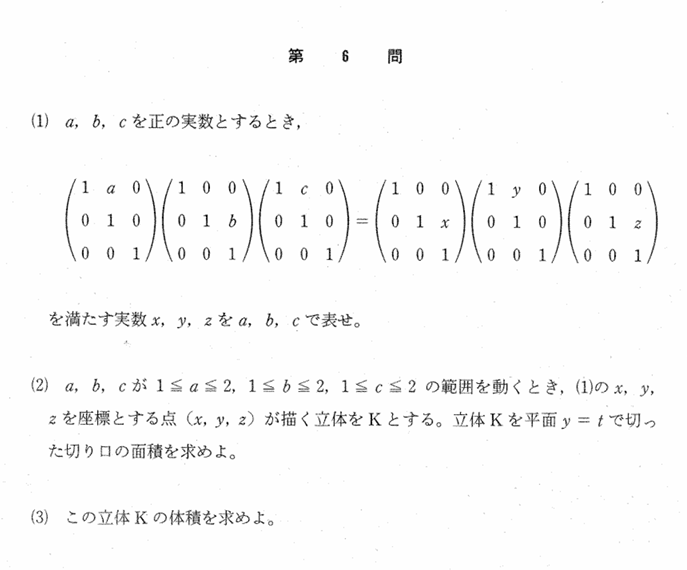

2000年 第6問
軌跡

分析
(1)はただの計算、(3)は(2)が解ければ解ける。この問題の本質は(2)である。yをtと固定しているが、このときa,c,t(=a+c)には関係性があるので、a,cの定義域は単に1以上2以下でなくtにもよるものだという部分がこの問題を難しくしている。
さらに、$\left(\frac{b}{t}c,\frac{b}{t}a\right)$の動く領域を考える際、両成分に含まれるbを固定して考える必要性があることも、軌跡の目的意識を持った頭の整理を要している。
これは経験に左右されるものは多いとは思うが、頭の使い方を知っていて解けた受験生と解けなかった受験生で大きい差をつけた問題であることは間違いない。
誘導
(1)でx,y,zをa,b,cで表せとしている。これは(2)で順像法的に考えさせるためのものである。この(1)の誘導の付け方は、(2)で順像法か逆像法かで悩むことを防ごうとした誘導なのかもしれない。
ちなみに逆像法的でも、t=2を分けて考えることと同値変形に注意すれば現実的に解くことが可能である。
(3)について、高校数学におけるもっともスタンダードな立体の体積の求め方がそのまま誘導になっているので、この誘導も自然なものであるといえる。
背景
まず、(1)の行列は何か有名なものかと疑うが、特にそのようなものはなさそうだった。
しかし、数学的な構造自体は面白いもので、$1\leq a\leq 2,1\leq b\leq 2,1\leq c\leq 2$の立方体に対して、与えられた行列のような変換をすることによって得られる立体の体積を求めさせているのである。つまり、写像の体積変換を背景としているのである。
また、この問題は重積分を用いても求めることができる。このとき、a,cからx,zへの変換を考えるところを、少し工夫して
$$t=a+c\quad ,\quad r=\frac{a}{a+c}$$
とすることで
$$x=b(1-r)\quad ,\quad y=t\quad ,\quad z=br$$
となり、a,bの範囲を、積分する変数であるb,rに変換しやすくなる。ヤコビアンは
$$\det\begin{pmatrix} 1-r & -b\\ r & b \end{pmatrix}=b$$
より積分区間を考慮すればあとは、y=tにおける断面を$D_t$として
$$\int\int_D_t \ dx\ dy=\begin{cases}\bigint_{1}^{2}\bigint_{\frac{1}{t}}^{\frac{t-1}{t}}b\ dr\ db\quad (2\leq t\leq 3)\\ \bigint_{1}^{2}\bigint_{\frac{t-2}{t}}^{\frac{2}{t}}b\ dr\ db\quad (3\leq t\leq 4)\end{cases}$$
を計算するのみになる。しかし、重積分を用いたとしても大して負荷は変わらない。